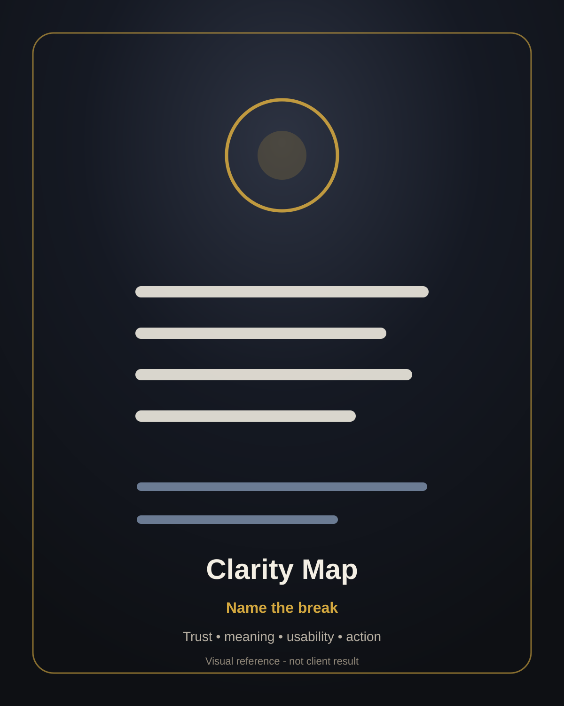
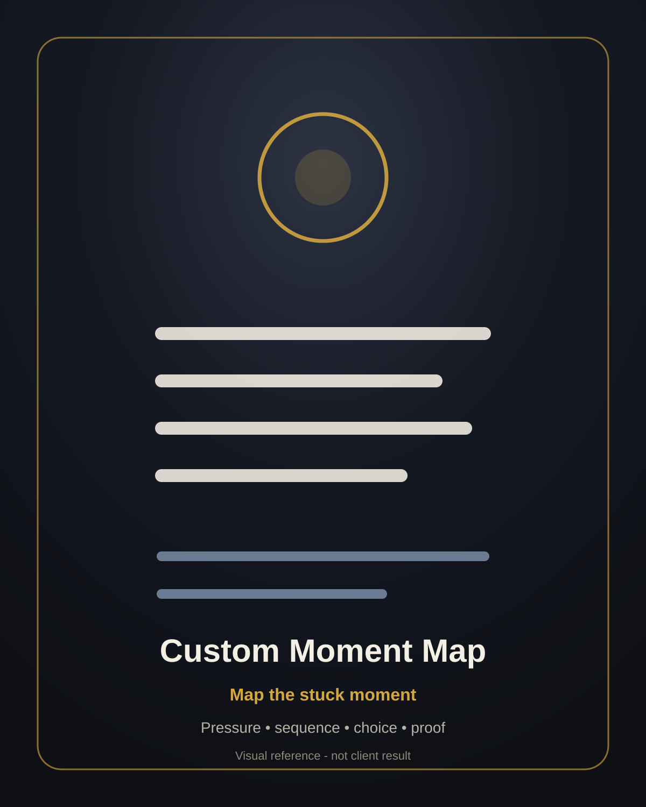
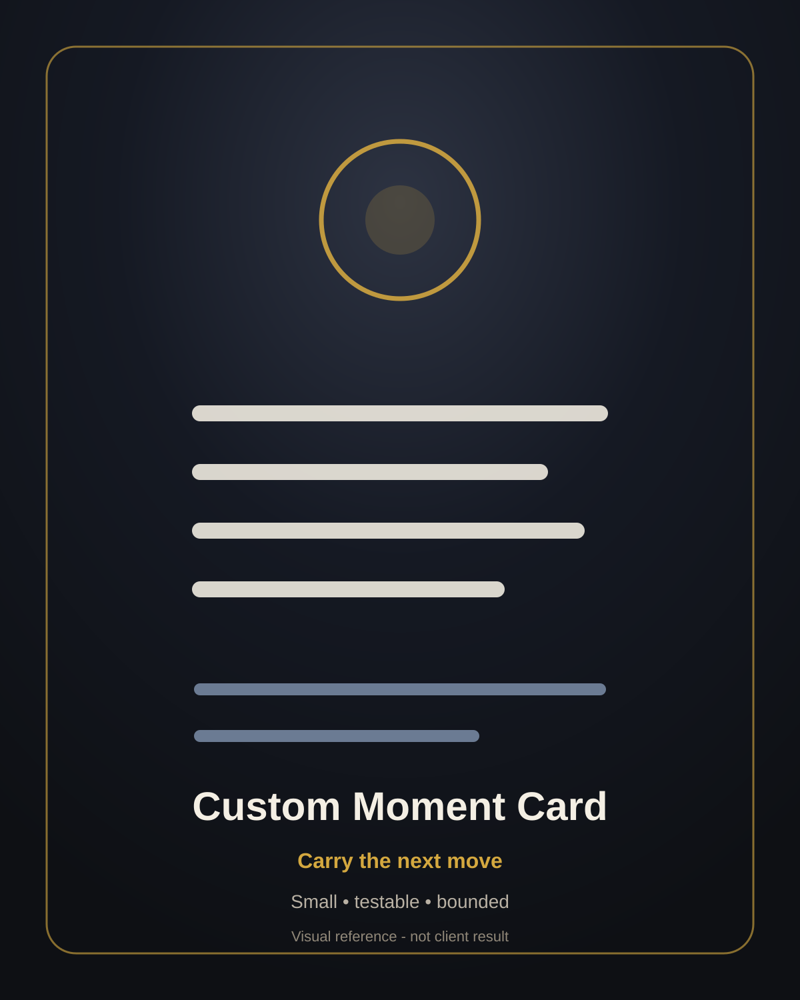
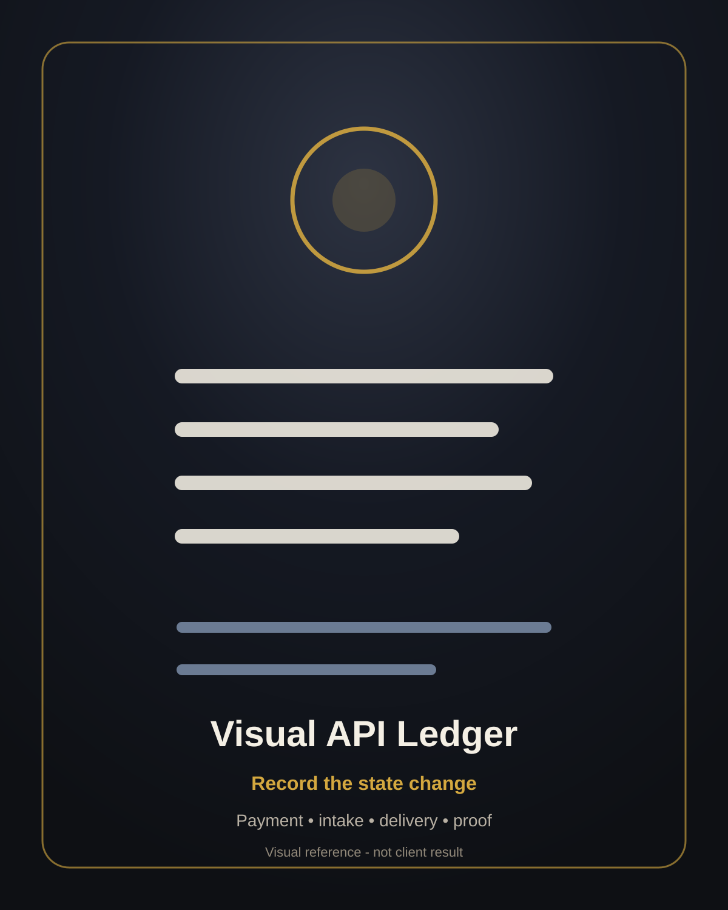

Situation named
One sentence naming the live object and current signal.
GOLDLEVEL Clarity Read / 48-hour diagnostic route
For founders, creators, operators, consultants, and independent experts with one offer, page, project, or decision that has pressure behind it but is not landing clearly.
Send one sentence about the stuck point. If it is a fit, I’ll map the likely hidden constraint, what not to do next, and the smallest testable move. Early price: $300.
The constraint pattern
This is for situations where there is already motion, attention, effort, or a live decision, but the next move is unclear or the offer/page/project is not landing with the people it needs to reach.
The goal is not to explain a whole system. The goal is to map one concrete constraint so you can stop compensating with more content, more redesign, more explanation, more waiting, or more complexity.
Step 1
Answer the micro-fit questions. This does not start the paid diagnostic. It only checks whether the problem is concrete enough to map.
No form answers are transmitted by this static page. Copy/download actions create local text or files under your control.
Step 2
A one-page map built around one live constraint.
One sentence naming the live object and current signal.
What appears to be happening at the surface.
The most likely drag point underneath the visible problem.
Where effort is being spent to work around the constraint.
The tempting move that would probably add more drag.
One bounded action and the proof to look for.
How it works
Use the micro-fit form or email one sentence about the live offer, project, page, or decision.
If it is concrete and diagnostic, you receive the payment + intake path. If not, I say no before taking money.
The 48-hour delivery clock starts only after payment and completed intake.
You get the likely constraint, what not to do next, and the smallest testable move.
Boundaries
Step 3
Use this only after fit and payment, or immediately before accepting payment if fit is uncertain. Your answers stay in this browser unless you copy or download them. Store or send exported intake data only through a channel you trust.
Moment & Matter visual layer
These are visual references for map, card, ledger, and proof loop. They are examples / visual placeholders, not client-result claims.

Names the break in trust, meaning, usability, or commercial action.

Turns one stuck moment into a visible operating structure.

Compresses the smallest next move into a usable artifact.

Tracks proof, revision, and learning without turning the page into theory.
Commercial wiring
This build ships with placeholders for contact, payment, and intake. Replace them in assets/site-config.js before treating the page as commercially wired.
If placeholders are still present, buttons explain what needs configuring rather than sending data anywhere.
Receipt-state panel
Use this checklist locally or privately. Do not expose completed client intake or private notes in public folders.
External payment receipt stored privately.
Completed intake received through the approved channel.
48-hour delivery timer starts only after payment + intake.
One-page map sent as Markdown/PDF or agreed written format.
Optional referral / testimonial / learning loop requested only with permission.
Self-learning register updated without exposing private client material.
Portable self-implementation
A practical implementation kit for founders, creators, operators, and independent experts who want to diagnose one stuck offer, page, project, or decision without needing the full system explained.
Clarify whether the stuck point is concrete enough to map before wasting effort.
Capture the live object, timing, evidence, drag pattern, and decision use.
Produce a one-page map: symptoms, likely constraint, what not to do next, and smallest testable move.
Track payment, intake, delivery clock, diagnostic delivery, proof request, and learning.
Turn each outreach, fit check, sale, or no-sale into the next better version.
Use a bounded sprint: send, score, fit-check, close, deliver, log, update.